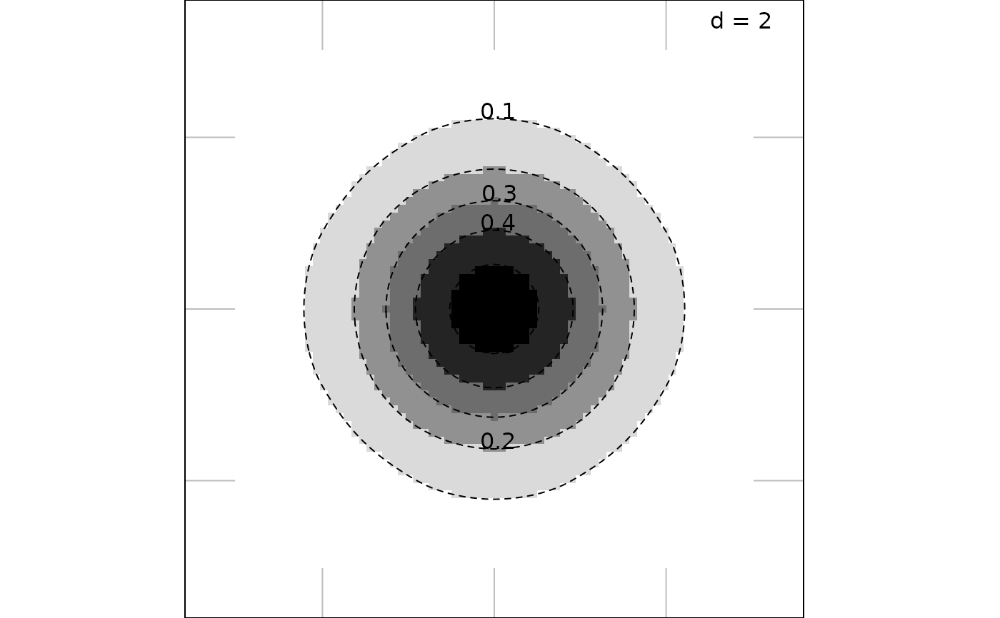
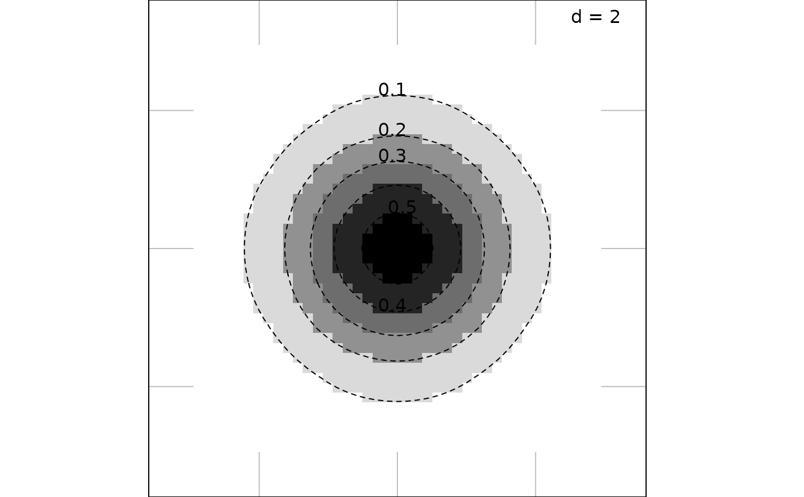
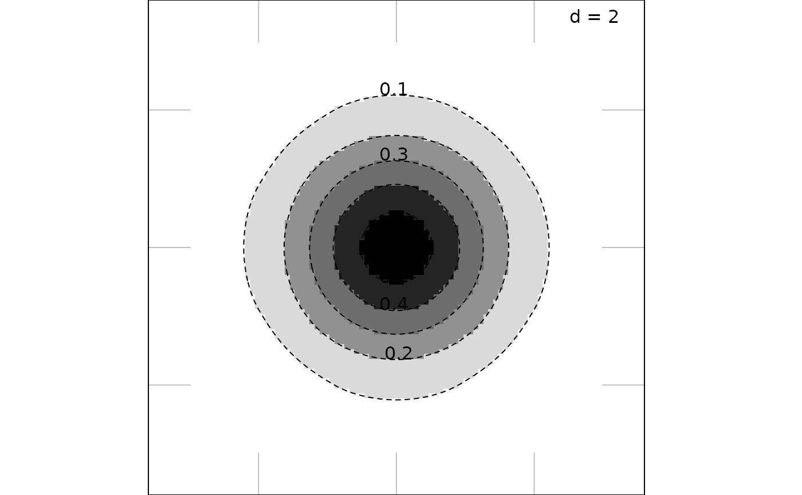

2-D scatter plot with loess estimation of an additional numeric score (levelplot)
s.image.RdThis function represents a two dimensional scatter plot with a continuous convex colored surface and/or contour lines representing a third variable.
Usage
s.image(dfxy, z, xax = 1, yax = 2, span = 0.5, gridsize = c(80L, 80L),
contour = TRUE, region = TRUE, outsideLimits = NULL, breaks = NULL,
nclass = 8, col = NULL, facets = NULL,
plot = TRUE, storeData = TRUE, add = FALSE, pos = -1, ...)Arguments
- dfxy
a data frame used to produce the plot
- z
a vector (or a matrix) of values on the
dfxyrows- xax
an integer (or a vector) indicating which column(s) of
dfxyis(are) plotted on the x-axis- yax
an integer (or a vector) indicating which column(s) of
dfxyis(are) plotted on the y-axis- span
a value to control the degree of smoothing
- gridsize
a 1 or 2-length vector indicating the cell numbers (horizontally and vertically) of the grid for the colored surface
- contour
a logical to draw contour lines
- region
a logical to fill inter-contour regions
- breaks
a vector of values to split
z. IfNULL,pretty(z, nclass)is used.- nclass
an integer for the number of desired intervals, ignored if
breaksis not missing.- outsideLimits
specific limits for the surface as a set of polygons. It must be an
SpatialPolygonsobject. Hole are authorized.- col
a color or a colors vector used for the colored cells
- facets
a factor splitting the rows of
dfxyso that subsets of the data are represented on different sub-graphics- plot
a logical indicating if the graphics is displayed
- storeData
a logical indicating if the data should be stored in the returned object. If
FALSE, only the names of the data arguments are stored- add
a logical. If
TRUE, the graphic is superposed to the graphics already plotted in the current device- pos
an integer indicating the position of the environment where the data are stored, relative to the environment where the function is called. Useful only if
storeDataisFALSE- ...
additional graphical parameters (see
adegparandtrellis.par.get)
Value
An object of class ADEg (subclass S2.image) or ADEgS (if add is TRUE and/or
if facets or multidimensional z or vectors for xax/yax are used).
The result is displayed if plot is TRUE.
Author
Alice Julien-Laferriere, Aurelie Siberchicot aurelie.siberchicot@univ-lyon1.fr and Stephane Dray
Examples
df1 <- data.frame(expand.grid(-3:3, -3:3))
names(df1) <- c("x", "y")
z1 <- (1 / sqrt(2)) * exp(-(df1$x ^ 2 + df1$y ^ 2) / 2)
g1 <- s.image(df1, z1)

# add a continuous color bar as legend
# update(g1, plegend.drawColorKey = TRUE)
g2 <- s.image(df1, z1, gridsize = 50)

g3 <- s.image(df1, z1, gridsize = 100)

## g4 <- s.image(df1, z1, gridsize = 1000, plot = FALSE)
if (FALSE) {
if(require(splancs, quietly = TRUE) & require(sp, quietly = TRUE)) {
Sr1 <- Polygon(cbind(c(0, 1, 2, 1, 2, 0, -2, -1, -2, -1, 0),
c(2.5, 1.5, 2, 0, -2, -1, -2, 0, 2, 1.5, 2.5)))
Sr2 <- Polygon(cbind(c(-0.5, 0.5, 0.5, -0.5, -0.5), c(0, 0, 1 ,1, 0)), hole = TRUE)
Srs2 <- Polygons(list(Sr1, Sr2), ID = "star and hole")
SPp <- SpatialPolygons(list(Srs2))
df2 <- cbind(c(rnorm(2000, 1, 0.25), rnorm(3000, -1, 1.5)), c(rnorm(2000, 1, 0.5),
rnorm(3000, -1, 3)))
z2 <- c(rnorm(2000, 12, 1), rnorm(3000, 1, 2))
g5 <- s.image(df2, z2, outsideLimits = SPp, grid = 200, xlim = c(-2.5, 2.5),
ylim = c(-2, 3), ppalette.quanti = colorRampPalette(c(grey(0.1), grey(0.9))))
data(t3012, package = "ade4")
g6 <- s.image(t3012$xy, ade4::scalewt(t3012$temp), porigin.include = FALSE)
g7 <- s.image(t3012$xy, ade4::scalewt(t3012$temp), outsideLimits = t3012$Spatial,
Sp = t3012$Spatial)
}
}